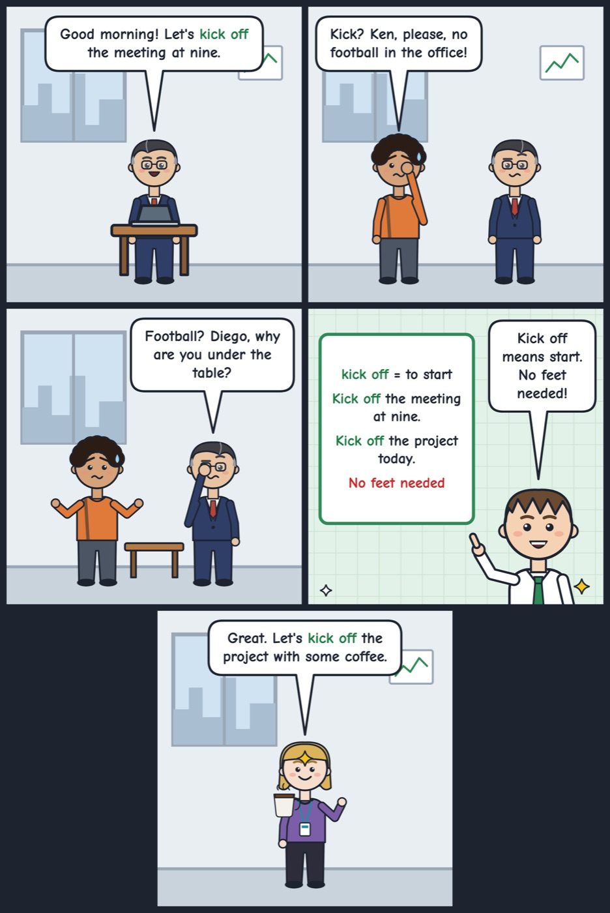

kick off
To start something, like a meeting, a project or an event.
Let's kick off the meeting with a quick update.
'Kick off' means to start something. Use it for meetings, projects, events and even games.
Your turn
What do you kick off your day with?
What do you kick off your day with?
See it in a comic
